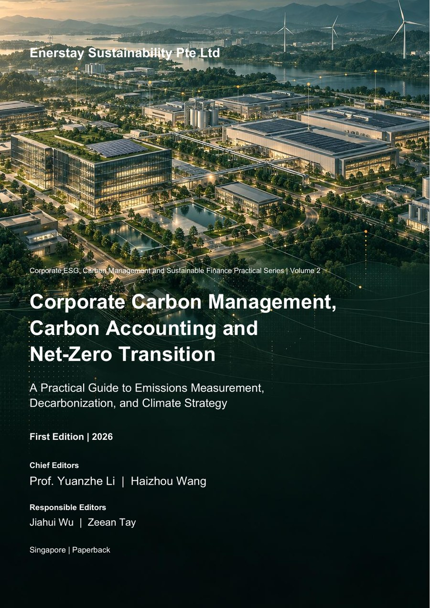

Construction Project Safety Management Handbook
A workfront-oriented handbook connecting design, procurement, sequencing, competence and critical-control decisions across the construction lifecycle.
ISBN 978-981-94-7946-7
Enerstay Sustainability Press
Professional handbooks and training texts connecting standards, evidence, management systems and applied sustainability practice.
Each title combines structured explanation, applied examples and reusable practice tools for professionals, organisations and learning cohorts.
2026 catalogue
Select a title to view its publication details and preface. Full book files are supplied only after purchase confirmation.
A workfront-oriented handbook connecting design, procurement, sequencing, competence and critical-control decisions across the construction lifecycle.
ISBN 978-981-94-7946-7

A practice-led route from greenhouse-gas accounting and evidence quality to reduction planning, supply-chain engagement and net-zero governance.
ISBN 978-981-94-7948-1

A structured internal-auditor learning text connecting ISO 14001:2026 management logic with planning, evidence collection, findings and corrective-action verification.
ISBN 978-981-94-7944-3

A practice-oriented manual for auditing AI management systems through risk, impact, lifecycle, data, human oversight and evidence-based judgement.
ISBN 978-981-94-7945-0